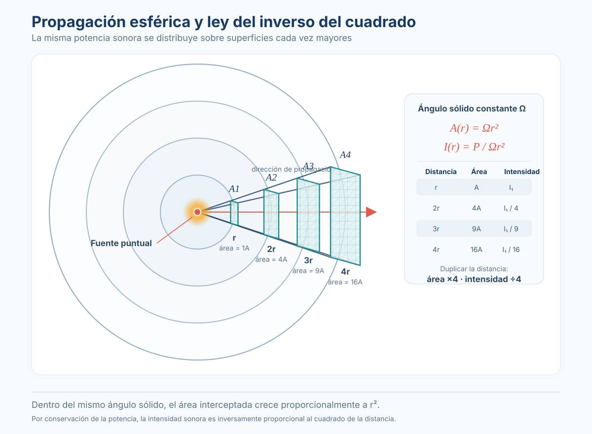

Sesión 9: ¿Por qué disminuye el sonido al alejarnos?¶
Pregunta central: si un monitor reproduce el mismo sonido al mismo volumen, ¿por qué lo escuchamos más débil cuando nos alejamos?
Al terminar la clase podrás: explicar qué es el campo libre, aplicar la regla aproximada de −6 dB por duplicación de distancia e interpretar una medición real.
Conexión con la sesión 8
En la sesión 8 estudiamos la directividad: cambiamos el ángulo manteniendo la distancia. Ahora hacemos lo contrario: cambiamos la distancia manteniendo la dirección.
1. Primero observamos: la energía se reparte¶
Imagina un monitor en un espacio abierto. Al alejarnos, la fuente no deja de producir la misma energía acústica; esa energía se distribuye sobre una superficie cada vez mayor.

La idea esencial: al duplicar la distancia a una fuente aproximadamente puntual, la energía sonora se distribuye sobre un área cuatro veces mayor. En condiciones ideales, la intensidad se reduce a una cuarta parte y el nivel sonoro disminuye aproximadamente 6 dB.
¿Qué significa «campo libre»?¶
El campo libre es un modelo en el que el sonido llega desde la fuente sin reflexiones importantes del entorno. Para esta primera explicación también dejamos de lado la absorción del aire.
- Aproximación práctica: un espacio abierto y despejado, suficientemente lejos de superficies reflectantes.
- Condición de laboratorio: una cámara anecoica acústica, dentro de su rango útil.
- En el aula: el suelo, las paredes y el techo reflejan sonido. Por eso las mediciones no siempre coinciden con el modelo.
No confundir
Campo libre significa que estudiamos la propagación sin reflexiones relevantes. Campo cercano y campo lejano describen regiones alrededor de la fuente. No son sinónimos.
2. La regla práctica: duplicar distancia = −6 dB¶
Supongamos que un monitor produce 90 dB SPL a un metro en condiciones ideales, en una dirección fija.
| Distancia | Nivel esperado | Diferencia respecto a 1 m |
|---|---|---|
| 1 m | 90 dB | 0 dB |
| 2 m | 84 dB | −6 dB |
| 4 m | 78 dB | −12 dB |
| 8 m | 72 dB | −18 dB |
Observa: duplicar dos veces la distancia (de 1 a 4 m) supone dos caídas de 6 dB, es decir, una disminución total aproximada de 12 dB.
La fórmula que resume la relación es:
- \(L_1\): nivel conocido en la distancia inicial \(r_1\).
- \(L_2\): nivel estimado en la nueva distancia \(r_2\).
Ejemplo sencillo: de 1 a 2 metros, \(r_2/r_1=2\); como \(20\log_{10}(2)\approx6\), el nivel baja aproximadamente 6 dB. No necesitas memorizar el desarrollo algebraico para comprender la regla.
Cuándo funciona esta aproximación
La disminución de −6 dB por duplicación corresponde a la divergencia geométrica de una fuente aproximadamente puntual, en una dirección fija, en condiciones semejantes al campo libre y suficientemente lejos para aplicar este modelo. No es una ley que describa cualquier sala o cualquier sistema de altavoces a todas las distancias.
3. Simulación: mueve al oyente, no al monitor¶
En esta simulación el nivel inicial de 90 dB a 1 m es hipotético. Mueve al espectador o presiona «Duplicar distancia» y observa el nivel calculado. También puedes escuchar una disminución ilustrativa de volumen, que no representa una medición calibrada.
🎛️ Abrir la simulación en pantalla completa
Dos preguntas: ¿qué ocurre al pasar de 2 a 4 metros? ¿Y al pasar de 4 a 8 metros?
4. Práctica: propagación con la HK Audio POLAR 10/12 MK2¶
Objetivo: comparar cómo varía el nivel registrado al alejarnos de una sola POLAR, manteniendo la dirección frontal, con la caída de una fuente puntual ideal en campo libre.
Materiales: HK Audio POLAR 10/12 MK2, ruido rosa filtrado alrededor de 1 kHz, cinta métrica y celulares con Decibel X (medición Leq/AVG).
Organización de la medición¶
| Grupo | Primera distancia | Segunda distancia | Tercera distancia |
|---|---|---|---|
| 1 | 2 m | 4 m | 8 m |
| 2 | 3 m | 6 m | 12 m |
| 3 | 4 m | 8 m | 16 m |
- Colocar una sola POLAR fija, en un lugar despejado, y reproducir el sonido de prueba a nivel moderado. Mantener la ganancia, el preset DSP y la ecualización sin cambios.
- Medir sobre el eje frontal de la columna; mantener constante la altura y orientación del celular. Utilizar el mismo teléfono para las tres distancias dentro de cada grupo.
- Registrar tres lecturas Leq/AVG de 15 segundos por posición, reiniciando cada medición.
- Calcular el promedio de las tres lecturas en cada posición y la diferencia respecto a la primera distancia del propio grupo.
- Comparar con el modelo ideal: 0 dB en la primera distancia, −6 dB en la segunda y −12 dB en la tercera.
La medición real tiene limitaciones
- Medir también el ruido ambiental con la POLAR apagada permitiría saber si interfiere significativamente, especialmente lejos de la fuente. Ese registro no se obtuvo sistemáticamente en la práctica del 20 de octubre.
- No comparar los niveles absolutos de grupos que utilizaron teléfonos diferentes sin verificar su calibración, ponderación y ajustes.
- La POLAR es un sistema de columna, no una fuente puntual ideal; el suelo, la geometría del sistema, la orientación y otras fuentes sonoras pueden modificar las lecturas.
- Si la aplicación indica niveles muy elevados, reducir el volumen y verificar la seguridad de la exposición; una aplicación sin calibración no confirma el SPL real.
Entrega: registro de las mediciones, gráfica comparativa y conclusión de 4 a 6 líneas. No se califica conseguir exactamente −6 dB.
5. Resultados reales de los tres grupos · 20 de octubre de 2026¶
Los grupos trabajaron en exteriores con la POLAR y entregaron 27 lecturas en total (tres lecturas por distancia, tres distancias por grupo).
| Grupo | Primera distancia (promedio) | Segunda distancia (promedio) | Tercera distancia (promedio) | Caída total medida | Caída total ideal |
|---|---|---|---|---|---|
| 1 | 2 m · 90,7 dB | 4 m · 89,6 dB | 8 m · 85,6 dB | −5,1 dB | −12,0 dB |
| 2 | 3 m · 86,6 dB | 6 m · 86,5 dB | 12 m · 83,0 dB | −3,6 dB | −12,0 dB |
| 3 | 4 m · 103,2 dB | 8 m · 100,8 dB | 16 m · 96,4 dB | −6,8 dB | −12,0 dB |
Los valores son los promedios aritméticos de las tres lecturas Leq anotadas en cada hoja, siguiendo el procedimiento de registro de la actividad. No son un Leq integrado de toda la serie ni niveles validados mediante sonómetro calibrado.
Simulación interactiva: mediciones vs. modelo ideal¶
Explora los tres grupos, selecciona puntos de la gráfica para ver las lecturas y mueve el control de ruido ambiental hipotético para comprender por qué una medición puede bajar menos de lo esperado.
📈 Abrir la simulación de resultados en pantalla completa
Lo que encontramos: las tres series disminuyen con la distancia, pero menos que la predicción puntual ideal. En los registros aparecen ruido de estudiantes, viento y un clarinete. No tenemos suficientes medidas de control para separar cuantitativamente el efecto del ruido de fondo del de la directividad, el suelo o los dispositivos.
Para discutir en clase:
- ¿En cuál de los tres grupos disminuyó menos el nivel al duplicar por primera vez la distancia?
- ¿Por qué comparamos la pérdida relativa de cada grupo en lugar del nivel absoluto entre teléfonos?
- ¿Qué lectura adicional realizaríamos con la POLAR apagada para evaluar el ruido de fondo?
- ¿La experiencia permite concluir que la POLAR siempre pierde menos de 6 dB por duplicación? ¿Por qué no?
6. Lo ideal frente a lo real¶
| Modelo ideal | Lo que puede ocurrir en un espacio real |
|---|---|
| No hay reflexiones relevantes | Las reflexiones pueden reforzar o cancelar ciertas frecuencias |
| Solo cambia la distancia | Puede variar ligeramente el ángulo, la altura o la orientación |
| La fuente se aproxima a un punto | Un monitor real tiene varios transductores y directividad |
| El ruido de fondo no interfiere | A mayor distancia, el ruido de fondo puede afectar más la lectura |
| Se ignora la absorción del aire | En exteriores y a distancias grandes pueden influir el aire, el viento y la temperatura |
Conclusión de la sesión: la regla de −6 dB por duplicación es nuestro punto de partida para comprender la propagación. Las mediciones nos ayudan a reconocer cuándo el modelo representa bien la realidad y cuándo intervienen otros factores.
Para profundizar: ¿de dónde sale la regla de −6 dB?
En una fuente puntual ideal que radia en todas direcciones, el área de la esfera aumenta como \(4\pi r^2\). Por tanto, la intensidad disminuye aproximadamente como:
Duplicar \(r\) divide la intensidad entre cuatro. La diferencia expresada en decibelios es:
La presión sonora disminuye aproximadamente como \(1/r\) en el campo radiado de este modelo.
Ampliación técnica: potencia sonora (SWL), presión sonora (SPL) y directividad Q
La potencia acústica de la fuente (SWL) no es lo mismo que la potencia eléctrica del amplificador. Una relación aproximada en campo libre es:
donde \(L_W\) es el nivel de potencia sonora relativo a \(10^{-12}\) W, \(L_p\) el nivel de presión sonora relativo a 20 µPa, \(r\) la distancia en metros y \(Q\) el factor de directividad en la dirección estudiada. Esta expresión utiliza las referencias habituales y una impedancia característica del aire cercana a 400 rayls; no debe añadirse una constante de +10,8 dB.
Por ejemplo, con \(L_W=120\) dB, \(Q=2\) y \(r=20\) m, el cálculo ideal da aproximadamente 86 dB SPL. \(Q=2\) puede representar radiación hemisférica ideal sobre un plano perfectamente reflectante; no describe automáticamente cualquier altavoz colocado en un escenario.
En un arreglo lineal ideal, la caída geométrica puede aproximarse a −3 dB por duplicación, pero un line array real no se comporta de ese modo a todas las distancias ni frecuencias.
Glosario mínimo
- SPL: nivel de presión sonora en un punto, expresado en dB SPL.
- dB: unidad logarítmica para expresar relaciones de nivel.
- Leq / AVG: nivel equivalente medido durante un intervalo.
- Campo libre: modelo sin reflexiones relevantes.
- Divergencia geométrica: distribución de la energía sobre superficies cada vez mayores.
Referencia de consulta: Everest, F. A. y Pohlmann, K. C. (2009). Master Handbook of Acoustics, 5.ª ed., cap. 3.